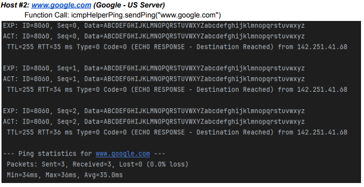
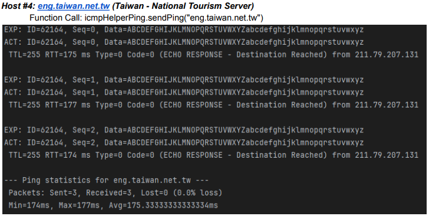
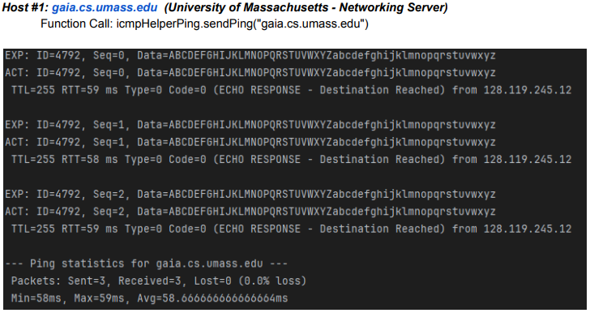
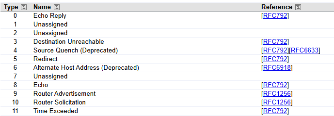

TraceRoute: Network Diagnostic Tool
This TraceRoute tool extends a raw socket ICMP ping implementation to create a Traceroute diagnostic
tool. The program sends ICMP echo requests with increasing Time-To-Live (TTL) values to identify
the sequence of routers between the source host and a destination host.
As packets travel through the network, routers return ICMP Time Exceeded messages when
the TTL reaches zero. By collecting these responses, the program determines the path taken
by packets and measures the round-trip time (RTT) for each hop.
Error Validation & ICMP Handling
- Packet Validation: Verifies ICMP Echo Replies against original request identifiers, sequence numbers, and raw data payloads.
- Network Metrics: Calculates round-trip time (RTT) statistics, including minimum, maximum, average values, and real time packet loss percentages.
- ICMP Error Parsing: Response handler for standard ICMP including: Echo Replies (Type 0), Destination Unreachable (Type 3), and Time Exceeded (Type 11).